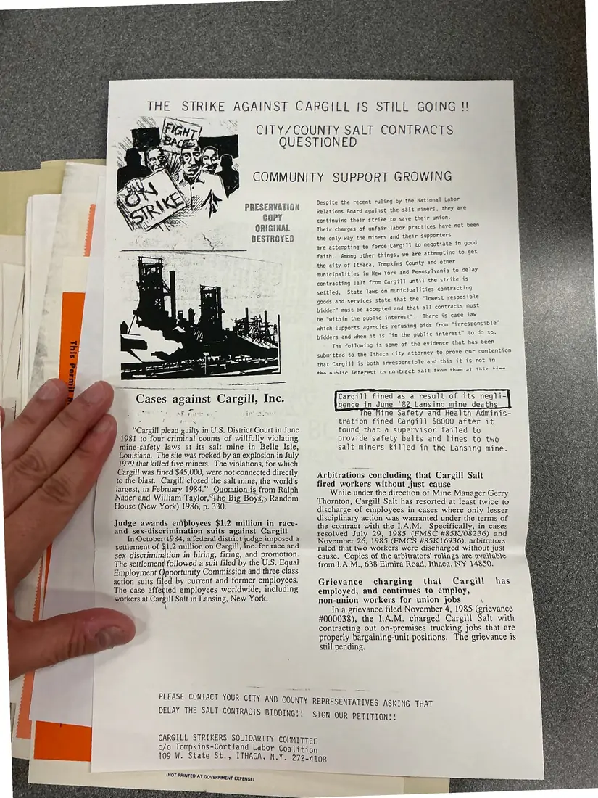

Flyer, 1 page
“The strike against Cargill is still going!!” flyer on city and county salt contracts
[Summer–Fall 1986]Date inferred
A Cargill Strikers Solidarity Committee flyer asking people to tell city and county representatives to delay salt-contract bidding. It lists cases against Cargill, including mine-safety violations and a race- and sex-discrimination settlement, and asks people to sign the committee's petition.
Download or cite this itemPages


(open zoom view)Read the page text (machine-read, mostly readable)
This text was generated automatically from the photograph and has not been corrected. The image is the authoritative record.
c ~ x Sse ~ SS PRESERVATION COPY ORIGINAL DESTROYED Cases against Cargill, Inc. ek > a3 SP four ss ie “Cargill plead yuilty in U.S. District Court in June 1981 to four criminal counts of willfully violating mine-safety laws at its salt mine in Belle Isle, Louisiana. The site was rocked by an explosion in July 1979 that killed five miners. The violations, for which Cargill was fined $45,000, were not connected directly to the blast. Cargill closed the salt mine, the world’s largest, in February 1984.” Quotation is from Ralph Nader and William Taylor,“The Big Boys,» Random House (New York) 1986, p. 330. ‘Judge awards employees $1.2 million in race- and sex-discrimination suits against Cargill In October| 1984, a federal district judge imposed a settlement of $1.2 million on Cargill, Inc. for race and sex discrimingtion in hiring, firing, and promotion. The settlement followed a suit filed by the U.S. Equal Employment Opportunity Commission and three class action suits filed by current and former employees. The case affeeted employees worldwide, including workers at Cargill Salt in Lansing, New York. STRIKE AGAINST CARGILL IS STILL GOING !! CITY/COUNTY SALT CONTRACTS QUESTIONED COMMUNITY SUPPORT GROWING Despite the recent ruling by the National Labor Relations Board against the seit miners, they are continuing their strike to save their union. Their charges of unfair labor practices have not been the only way the miners and their supporters are attempting to force Cargill to negotiate in good faith. Among other things, we are attempting to get the city of Ithaca, Tompkins County and other municipalities in New York and Pennsylvania to delay contracting salt from Cargill until the strike is settled. State laws on municipalities contracting goods and services state that the "lowest resposible ts must bidder” must be accepted and that all contracts mu There is case law be "within the public interest”. : i bids from “irresponsible which supports agencies refusing bidders and when it is “in the public interest” to do so. The following is some of the evidence that has been submitted to the Ithaca city attorney to prove our contention that Cargill is both irresponsible and this it is not in ies the nuhlic interest tn contract salt fram them at thic time Cargill fined as a result of its negli- gence in June '82 Lansing mine death e Mine Safety and Health Adminis- tration fined Cargill $8000 after it found that a supervisor failed to provide safety belts and lines to two salt miners killed in the Lansing mine. Arbitrations concluding that Cargill Salt fired workers without ,just cause While under the direction of Mine Manager Gerry Thornton, Cargill Salt has resorted at least twice to discharge of employees in cases where only lesser disciplinary action was warranted under the terms of the contract with the I.A.M. Specifically, in cases resolved July 29, 1985 (FMSC #85K/08236) and November 26, 1985 (FMCS #85K16936), arbitrators ruled that two workers were discharged without just cause. Copies of the arbitrators’ rulings are available from I.A.M., 638 Elmira Road, Ithaca, NY 14850. Grievance charging that Cargill has employed, and continues to employ, non-union workers for union jobs \ In a grievance filed November 4, 1985 (grievance #000038), the I.A.M. charged Cargill Salt with contracting out on-premises trucking jobs that are properly bargaining-unit positions. The grievance is still pending. j | PLEASE CONTACT YOUR CITY AND COUNTY REPRESENTA TIVES ASKING TH DELAY THE SALT CONTRACTS BIDDING!! i SIGN OUR PETITION! ! = | CARGILL STRIKERS SOLIDARITY COMMITTEE c/o Tompkins-Cortland Labor Coalition i : 109 W. State St., ITHACA, N.Y. 272-4108 (NOT PRINTED AT GOVERNMENT EXPENSE)
See something wrong, or recognize a person or event? Send a correction. If you hold rights in this item or think it should not be public, write to the same address.